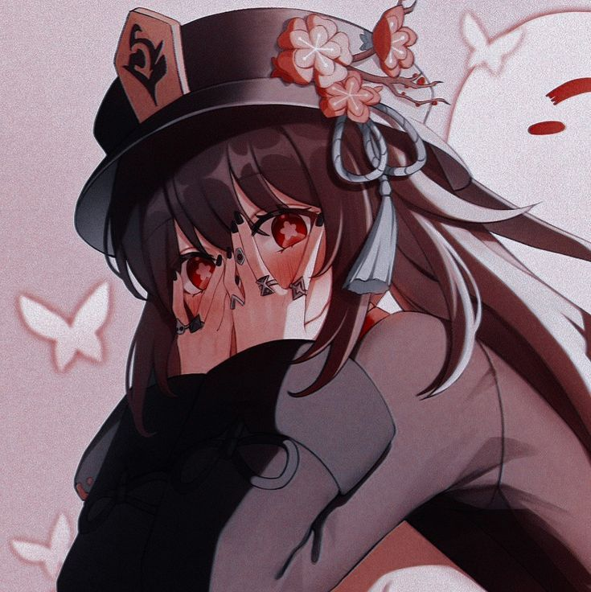
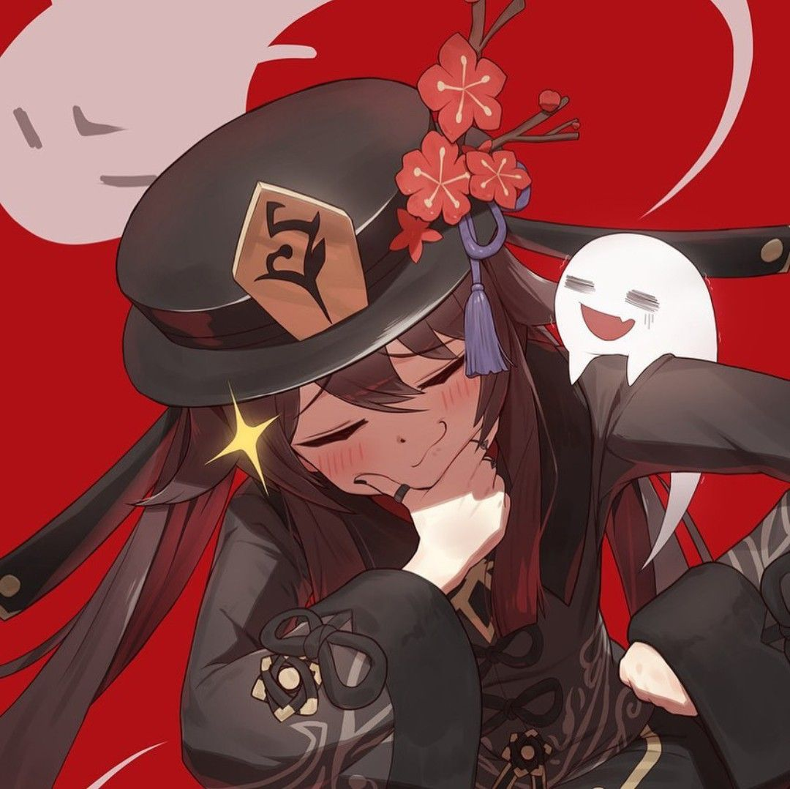

Cenas de Hu Tao
Todas as cenas
As três ilustrações estão na prateleira ao lado. Abra qualquer uma para ver de perto.
Buscas recentes
Nada recente por aqui.
Obras na coleção
Nenhuma obra com esse filtro.
Ela é a 77ª diretora da Funerária Wangsheng. Estuda poemas antigos, coleciona borboletas e encara a morte com uma piada pronta.


Nada recente por aqui.
Nenhuma obra com esse filtro.